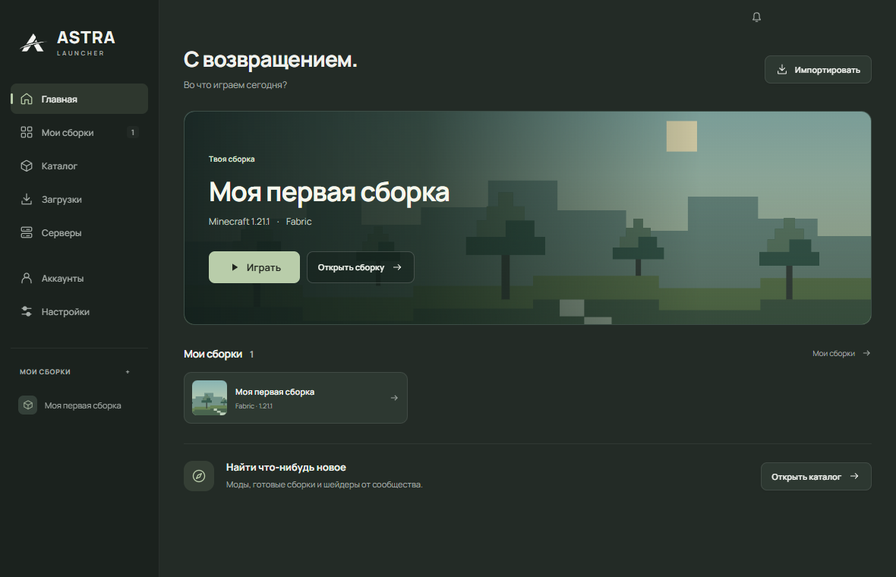

Твои сборки не мешают друг другу.
У каждой свои моды, настройки и миры. Копируй сборку перед экспериментами, переноси её через ZIP и возвращайся к привычной игре.
Fabric · Quilt · Forge · NeoForge
AstraLauncherНезависимый лаунчер для Minecraft Java Edition
Собери моды по своему вкусу. Сохрани любимый мир.
И просто нажми «Играть».
Бесплатно · Windows x64
Неофициальный продукт Minecraft.
Не одобрен Mojang или Microsoft и не связан с ними.

МЕНЬШЕ ВОЗНИ. БОЛЬШЕ ИГРЫ.
У каждой свои моды, настройки и миры. Копируй сборку перед экспериментами, переноси её через ZIP и возвращайся к привычной игре.
Fabric · Quilt · Forge · NeoForgeКаталог Modrinth доступен прямо в лаунчере. Файлы с CurseForge и других сайтов можно добавить в выбранную сборку несколькими кликами.
Моды · Ресурспаки · ШейдерыСоздавай резервные копии миров и восстанавливай их из лаунчера. Подбери тему, поставь свой шрифт и сделай AstraLauncher удобной для себя.
Резервные копии · Темы · Свои шрифтыНАЧНЁМ НОВУЮ ИСТОРИЮ?
Скачай AstraLauncher, запусти файл и создай свою первую сборку.
Лаунчер бесплатный. Minecraft приобретается отдельно.
{{SIZE}} · Portable · Без установки
{{DOWNLOAD_BUTTON}}Что нового и файлы выпускаSHA-256 опубликован рядом с файлом в выпуске. Его совпадение подтверждает целостность файла, но само по себе не является проверкой безопасности.
Открыть SHA256SUMS.txtПеред изменением сборки сохрани важные миры. {{SIGNING_NOTE}}
ПАРА ВАЖНЫХ ДЕТАЛЕЙ
Только лаунчер и необходимые ему компоненты. Игровых файлов, миров и готовых модов в exe нет. При подготовке сборки AstraLauncher получает Minecraft и загрузчик из их источников.
Готовый вход Microsoft для пользователей пока в разработке. Доступны локальный профиль и Ely.by. Локальный профиль не подтверждает владение Minecraft и не открывает доступ к серверам, требующим официальную авторизацию.
Скачай ZIP сборки с сайта CurseForge и открой «Мои сборки → Импортировать». Версии Minecraft и загрузчика определяются по manifest.json, файлы загружаются с официального сайта. Недоступный файл можно скачать с его официальной страницы и выбрать во время установки. Также поддерживаются .mrpack, Prism / MultiMC, ASTRA и ZIP игровой папки.
Сейчас публикуется версия для Windows x64. Сборки для macOS и Linux пока недоступны.
{{SOURCE_NOTE}} Лицензии сторонних компонентов сохраняются отдельно. Посмотреть лицензии.
У сайта нет аналитики, рекламных трекеров и форм регистрации. Лаунчер хранит настройки и сборки на устройстве; выбранные внешние сервисы получают запросы для загрузки, входа или скинов. Подробности — в политике данных.